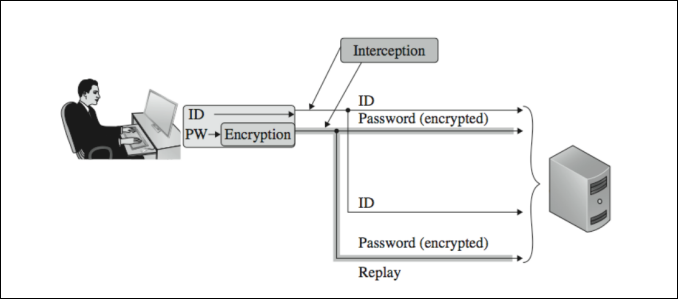
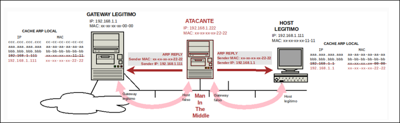
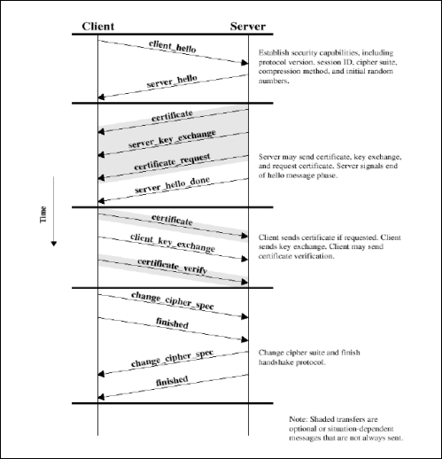
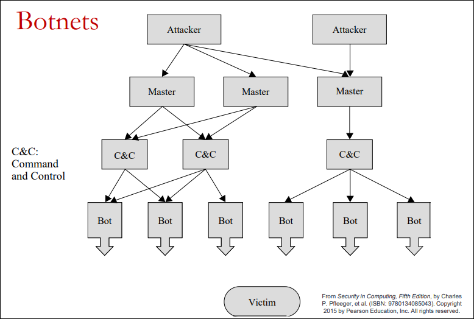
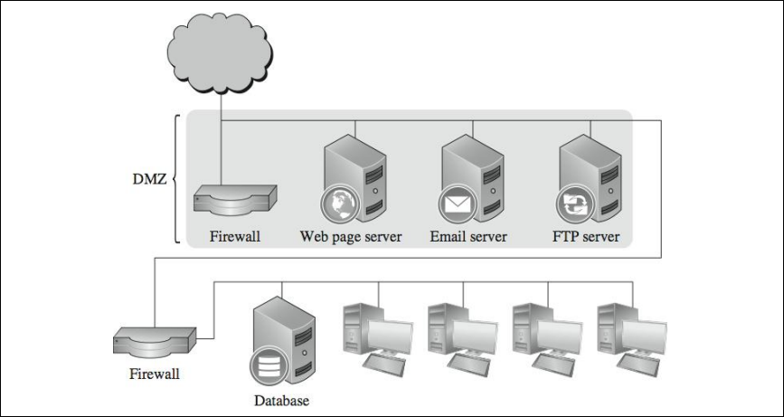
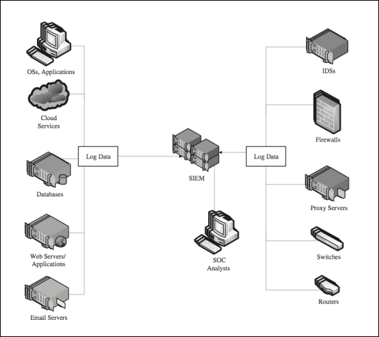
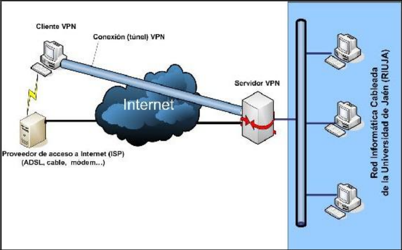
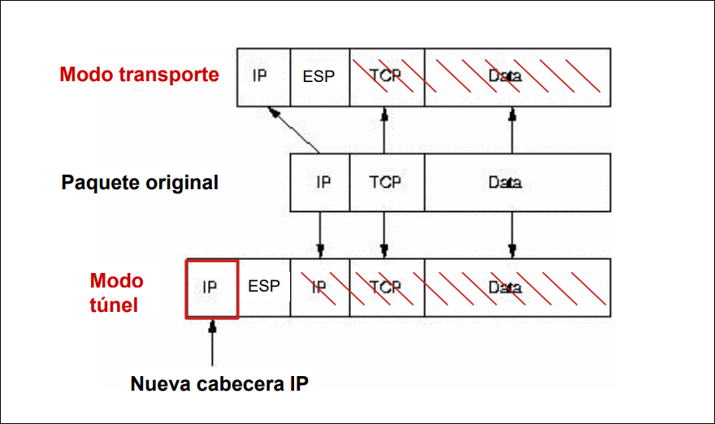
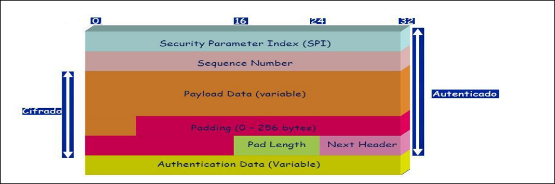
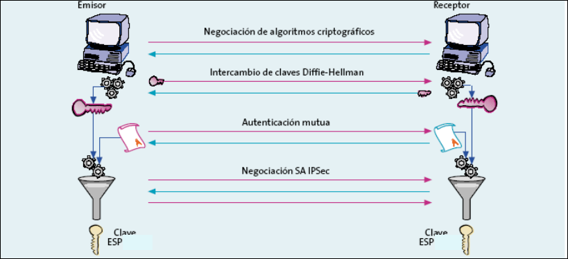

CIBER · curso 3
4. Seguridad en Redes · CIBER
4.1 Introducción
La seguridad en redes busca proteger tanto la información como los servicios de red frente a accesos no autorizados, modificaciones, destrucción de datos, filtraciones de información confidencial y pérdida de disponibilidad.
4.1.1 Por qué las redes son vulnerables
Las comunicaciones pueden viajar por cable, fibra óptica, microondas, WiFi o satélite, y cada medio introduce debilidades propias. La idea de fondo es siempre la misma: el canal puede ser interceptado, monitorizado o manipulado. Por eso puede haber escuchas en enlaces cableados, receptores no autorizados en LANs inalámbricas o interceptación en enlaces por satélite y microondas.
4.1.2 Factores que aumentan la vulnerabilidad
Hay varios rasgos estructurales que hacen más difícil proteger una red:
- Anonimato: un atacante puede operar a distancia y dificultar su identificación.
- Múltiples puntos de ataque: cuantos más nodos y servicios existan, más superficies expuestas hay.
- Compartición: al conectar recursos, aumenta el número de posibles usuarios con acceso.
- Complejidad: conviven sistemas operativos, aplicaciones y dispositivos muy distintos.
- Perímetro desconocido: en redes grandes y cambiantes no siempre está claro qué forma parte de la red.
- Ruta desconocida: entre dos hosts puede haber varios caminos, algunos no confiables.
4.1.3 Debilidades de TCP/IP y ataques básicos de red
TCP/IP no se diseñó inicialmente con la seguridad como objetivo principal. Por eso, en su forma original, no incorpora mecanismos sólidos de cifrado, autenticación ni integridad. El resultado es que las comunicaciones pueden ser escuchadas, interceptadas o alteradas.
Modificación y fabricación de datos
Si la comunicación no está protegida, un atacante puede modificar o fabricar información. Las formas más habituales son:
- corrupción de datos;
- secuenciación indebida, cambiando el orden de llegada;
- sustitución de fragmentos por otros;
- inserción de nuevos valores;
- repetición de datos legítimos ya transmitidos.
Ataque de repetición
Un ataque de repetición o replay consiste en interceptar una comunicación válida y reenviarla después para que el receptor la acepte como legítima. La defensa básica es asociar a cada intercambio un identificador único, normalmente mediante números de secuencia o valores equivalentes, para que un mensaje viejo no pueda aceptarse otra vez.

Sniffing
El sniffing es la monitorización o interceptación no autorizada del tráfico de red. Puede ser:
- pasivo, si el atacante solo observa;
- activo, si además inyecta o modifica datos.
Las contramedidas más directas son el cifrado, la segmentación de red, los IDS para detectar sniffing activo y la monitorización de dispositivos no autorizados.
4.1.4 Reconocimiento y suplantación en red
Escaneo de puertos
El escaneo de puertos permite averiguar qué equipos están activos, qué servicios ofrecen y, a veces, qué sistema operativo o versión de software utilizan. Es una técnica útil para administración y auditoría, pero también para un atacante que busca objetivos fáciles. La herramienta más conocida es Nmap.
Con esta información un atacante puede identificar máquinas con un sistema operativo concreto, localizar servicios vulnerables o automatizar barridos de rangos completos de direcciones IP.
Reducir el riesgo pasa por tres medidas básicas: no abrir más puertos de los necesarios, no exponer más información de la imprescindible en los servicios y mantener actualizado el software.
Spoofing
El spoofing consiste en hacerse pasar por otro elemento dentro de la red. Puede darse en varias capas, por ejemplo como IP spoofing, MAC spoofing o DNS spoofing. El objetivo suele ser robar información, alterar comunicaciones o saltarse controles de acceso.
Las medidas mencionadas en los apuntes son la autenticación basada en criptografía, el filtrado de tráfico, las políticas de control de acceso, la monitorización y los IDS.
DNS spoofing
En el DNS spoofing, el atacante responde antes que el servidor legítimo y logra que la víctima asocie un dominio correcto con una IP falsa. En consecuencia, el usuario cree estar accediendo al sitio legítimo cuando en realidad se le redirige a un sistema controlado por el atacante.
ARP spoofing y Man in the Middle
ARP sirve para averiguar qué dirección MAC corresponde a una dirección IP dentro de una red local. Su debilidad es conocida: no autentica bien las respuestas, puede aceptar respuestas no solicitadas y cualquier equipo puede emitirlas.
Eso permite el ARP spoofing o ARP poisoning: el atacante envía respuestas ARP falsas, envenena la caché de las víctimas y consigue que el tráfico pase por él. De esta forma se sitúa entre dos extremos y ejecuta un Man in the Middle (MitM), capturando, observando o modificando la comunicación mientras la reenvía para no levantar sospechas.

4.1.5 Protocolos inseguros y protocolos seguros
Protocolos inseguros
Algunos protocolos clásicos no incorporaban protección suficiente:
- Telnet: acceso remoto sin cifrado.
- POP en sus primeras versiones: credenciales y correo sin cifrar.
- HTTP: ni cifra ni autentica; si la información no es pública, la confidencialidad y la autenticación quedan expuestas.
Protocolos seguros
Los protocolos seguros añaden confidencialidad, integridad y autenticación usando técnicas criptográficas en distintas capas.
IPsec trabaja en la capa de red. Su objetivo es proteger paquetes IP de forma transparente a las aplicaciones. Entre sus piezas principales están:
- ESP (Encapsulating Security Payload), que protege la carga útil con autenticación, integridad y, normalmente, cifrado simétrico.
- IKE (Internet Key Exchange), que negocia claves y parámetros de seguridad usando criptografía asimétrica, Diffie-Hellman y, en muchos despliegues, certificados.
Su caso de uso típico es la VPN.
SSL/TLS opera en la capa de transporte. Aporta autenticación del servidor mediante certificados X.509v3, autenticación opcional del cliente, confidencialidad e integridad. Al iniciar una sesión, cliente y servidor negocian una suite criptográfica que incluye, en esencia, mecanismo de autenticación, algoritmo de cifrado y función hash.
TLS se apoya en dos subprotocolos:
- Handshake, que autentica, negocia parámetros y establece la sesión segura.
- Record, que protege los datos ya intercambiados.

Históricamente, el handshake pudo usar RSA, Diffie-Hellman fijo, Diffie-Hellman efímero y mecanismos basados en curvas elípticas. El Diffie-Hellman anónimo no es recomendable porque queda expuesto a MitM. TLS 1.3 simplifica y moderniza ese proceso.
SSH trabaja en la capa de aplicación y proporciona un canal cifrado y autenticado para administración remota. Sustituye a herramientas como Telnet, rlogin o rsh, y soporta autenticación por contraseña y por claves públicas.
Otros protocolos y tecnologías seguras citados en los apuntes son:
- SFTP, transferencia segura de ficheros sobre SSH.
- DNSSEC, que añade protección criptográfica a DNS y ayuda frente al DNS spoofing.
- FTPS, FTP protegido con TLS/SSL.
- OpenVPN, una VPN basada en TLS/SSL.
4.1.6 Ataques a la disponibilidad
En redes, la seguridad no trata solo de confidencialidad. También importa la disponibilidad: que el servicio siga funcionando. Puede perderse por problemas de enrutado, demanda excesiva o fallos de hardware y software.
DoS y DDoS
Los ataques de denegación de servicio (DoS) intentan impedir que un sistema siga prestando servicio. Los apuntes distinguen tres grandes familias:
- ataques volumétricos;
- ataques basados en aplicación;
- ataques de deshabilitación de comunicaciones.
Cuando intervienen muchas máquinas coordinadas, el ataque pasa a ser un DDoS. Suele apoyarse en una botnet, es decir, una red de equipos comprometidos controlados a través de una infraestructura de Command and Control (C&C).
Ping of Death
El Ping of Death es un DoS clásico basado en el envío de paquetes ICMP malformados o demasiado grandes con el objetivo de provocar fallos en el sistema destino.
Smurf
El ataque Smurf falsifica como origen la IP de la víctima y envía peticiones ICMP Echo a una dirección de broadcast. El efecto es una amplificación: numerosos equipos responden a la víctima y la saturan.
SYN flooding
El SYN flooding explota el establecimiento de conexión en TCP. Cuando el servidor recibe un SYN, reserva recursos y queda a la espera del ACK final del cliente. Durante ese tiempo mantiene la conexión en estado SYN_RECVD.
Si el atacante envía muchas peticiones SYN con IPs falsificadas, el servidor responde con SYN+ACK, pero el ACK final nunca llega. Al llenarse la cola de conexiones pendientes, las peticiones legítimas empiezan a rechazarse.
El ataque se apoya en dos debilidades:
- la falta de autenticación fuerte del origen de los paquetes;
- la posibilidad de hacer IP spoofing.
Las contramedidas citadas se aplican en dos niveles:
| Nivel | Medidas |
|---|---|
| Sistema | Reducir el timeout, aumentar la cola de peticiones pendientes y deshabilitar servicios no esenciales |
| Router | Bloquear paquetes externos con direcciones internas como origen y bloquear paquetes salientes con direcciones de origen que no pertenezcan a la red interna |
Botnets
Una botnet es una red de equipos comprometidos controlados desde uno o varios nodos de C&C. Su valor está en la escala: permiten lanzar DDoS, distribuir malware, enviar correo masivo o apoyar otros ataques coordinados.

4.2 Cortafuegos
Un cortafuegos es el mecanismo que aplica una política de control de accesos entre redes. Puede ser hardware, software o una combinación de ambos, y su función es monitorizar y filtrar el tráfico que entra o sale de una red protegida.
En la práctica suele ser un dispositivo dedicado, porque así resulta más sencillo de analizar, mantener y optimizar. Su valor no está solo en bloquear paquetes, sino en convertir la política de seguridad en un conjunto claro de reglas.
Un cortafuegos bien diseñado debe cumplir tres propiedades: estar siempre en el camino del tráfico que pretende controlar, ser resistente a manipulaciones no autorizadas y mantenerse lo bastante simple como para poder ser analizado con rigor.
4.2.1 Qué puede y qué no puede hacer
Contra qué protege
Un cortafuegos protege frente a accesos no autorizados y tráfico no permitido, puede restringir también el tráfico saliente desde el interior y actúa como punto central para aplicar política de seguridad y auditoría. Naturalmente, también debe protegerse a sí mismo.
Limitaciones
No es una defensa total. Sus límites principales son:
- no evita bugs en aplicaciones o servicios ya permitidos;
- no protege frente a ataques que usan conexiones autorizadas;
- no resuelve por sí mismo la seguridad de la red interna;
- solo controla el tráfico que realmente pasa por él;
- puede resultar molesto para los usuarios si está mal diseñado;
- requiere una configuración y una administración cuidadosas.
Esto implica que el cortafuegos debe formar parte de una política global, no ser la única defensa.
4.2.2 Ejemplo de política
Una política típica puede expresarse como una secuencia de reglas. El ejemplo de los apuntes, pasado a tabla, permite correo SMTP y TFTP hacia la red interna, HTTP saliente desde la red interna y HTTP entrante hacia un servidor web concreto; el resto se bloquea:
| Regla | Tipo | Origen | Destino | Puerto destino | Acción |
|---|---|---|---|---|---|
| 1 | TCP | * |
192.168.1.* |
25 |
Permitir |
| 2 | UDP | * |
192.168.1.* |
69 |
Permitir |
| 3 | TCP | 192.168.1.* |
* |
80 |
Permitir |
| 4 | TCP | * |
192.168.1.18 |
80 |
Permitir |
| 5 | TCP | * |
192.168.1.* |
* |
Denegar |
| 6 | UDP | * |
192.168.1.* |
* |
Denegar |
4.2.3 Tipos de cortafuegos por tecnología
Filtrado de paquetes
Es la forma más básica: un router o dispositivo analiza cabeceras IP, TCP, UDP o ICMP y toma decisiones en función de una lista de reglas. Suele fijarse en:
- IP de origen;
- IP de destino;
- protocolo;
- puertos;
- interfaz por la que entra o sale el paquete.
Su comportamiento habitual sigue una de dos políticas:
- denegar todo lo no permitido explícitamente;
- permitir todo lo no denegado explícitamente.
Cada regla tiene una parte de emparejamiento y una acción. Las acciones típicas son:
- aceptar;
- denegar notificando al origen;
- descartar sin notificar;
- registrar o disparar acciones adicionales.
La gran ventaja del filtrado de paquetes es que es rápido, escalable e independiente de las aplicaciones. Sus límites son que la definición de reglas puede volverse compleja, que no entiende bien el contexto del tráfico y que muchas implementaciones confían demasiado en la dirección IP, que puede falsificarse.
Inspección con estado
El filtrado dinámico o stateful inspection no trata cada paquete como si estuviera aislado. Mantiene una tabla de estados con las conexiones activas, quién las inició y qué respuestas son coherentes. Así puede distinguir mejor entre petición y respuesta, reconocer el avance de una conexión TCP y permitir solo paquetes que encajan en una comunicación válida.
Además, muchos productos combinan esta idea con firmas o patrones sospechosos ya conocidos.
Cortafuegos de aplicación o proxy
En un cortafuegos de capa de aplicación no hay paso directo entre red externa e interna. Toda comunicación debe pasar por un proxy, de modo que existen dos conexiones separadas:
- una entre cliente y cortafuegos;
- otra entre cortafuegos y servidor.
El cortafuegos actúa como servidor frente al cliente y como cliente frente al servidor. Esto permite un control muy fino del protocolo y del contenido de cada servicio. Por eso suelen incorporar autenticación, auditoría detallada y restricciones más específicas que un filtro de paquetes.
Además, las reglas suelen ser más fáciles de definir que en un router con puro filtrado de paquetes, y cada proxy puede tratarse como un componente relativamente independiente dentro del sistema de defensa.
Ejemplos mencionados en los apuntes:
- un proxy de correo que escanea mensajes en busca de virus antes de reenviarlos;
- un proxy FTP que permite descargas pero bloquea el comando
put.
A cambio, tienen peor rendimiento, rompen el modelo cliente-servidor directo y obligan a desplegar software específico por servicio.
Cortafuegos híbridos y NAT
La mayoría de los productos comerciales son híbridos: combinan filtrado de paquetes, inspección con estado y, cuando interesa, funciones de proxy. Algunos incluso se comportan como proxy en el establecimiento de la conexión y pasan a un tratamiento más ligero durante la transferencia de datos.
En este contexto suele aparecer NAT. No es un cortafuegos completo por sí mismo, pero añade opacidad: oculta la información TCP/IP de los hosts internos y hace que, desde fuera, toda la red parezca salir por una única IP pública. Eso dificulta que los equipos internos sean visibles directamente.
4.2.4 Arquitecturas de cortafuegos
Las configuraciones clásicas que aparecen en los apuntes son:
- router de filtrado de paquetes: un único router entre red interna y externa;
- host de base dual (dual-homed bastion host): un equipo intermedio que corta el tráfico directo entre ambas redes y sirve como bastión; en él se pueden instalar proxies de aplicación o permitir login remoto para acceder desde ahí al resto de hosts;
- proxy con router de filtrado: combina un bastion host con proxies y un router que solo permite el tráfico necesario hacia ese host.
4.2.5 DMZ
La DMZ es una subred intermedia entre Internet y la intranet. Su objetivo es alojar los servicios que deben ser visibles desde fuera sin exponer directamente la red interna. Allí suelen ubicarse servidores web, correo, FTP y DNS.

La idea es simple: desde Internet solo se debe poder alcanzar lo estrictamente necesario, y ese tráfico debe terminar primero en la DMZ. Como esos servidores están más expuestos, requieren protección reforzada. En la DMZ también pueden convivir filtros, antivirus y zonas de cuarentena.
Como la DMZ está separada de la red interna, puede apoyarse también en funciones de NAT en el bastion host o en el cortafuegos para ocultar mejor la estructura interna.
DMZ para correo electrónico
En correo, el servidor de la DMZ actúa como filtro y ocultador de información interna, pero debe seguir siendo transparente hacia el interior. Cuando llega un mensaje desde Internet:
- reensambla cabecera, cuerpo y adjuntos;
- analiza contenido malicioso conocido;
- revisa violaciones del protocolo SMTP;
- comprueba las direcciones del destinatario;
- reescribe la dirección hacia el servidor interno;
- reenvía el mensaje.
En sentido saliente, además de lo anterior, analiza si hay datos sensibles y reescribe cabeceras que revelen nombres de host, correos o IPs internas, sustituyéndolos por el dominio del proxy o la IP externa del cortafuegos.
DMZ para servicios web
En tráfico HTTP/HTTPS, el cortafuegos o proxy puede inspeccionar las peticiones en busca de elementos sospechosos, por ejemplo líneas anormalmente largas o componentes maliciosos. Si detecta algo extraño, descarta la petición; si no, la reenvía al servidor de la DMZ.
4.2.6 Tipos de cortafuegos por ubicación
Los apuntes distinguen cuatro despliegues habituales:
| Tipo | Uso típico | Rasgos |
|---|---|---|
| Personal | Un único equipo | Filtra entrada y salida, oculta el sistema frente a escaneos y conviene combinarlo con antivirus |
| SOHO | Pequeñas oficinas, típicamente de unos 2 a 50 usuarios | Suele ir integrado en equipos pequeños, delante del router o incluso dentro de él |
| Hardware | Oficinas medianas y sucursales | Gestión centralizada, funciones básicas y sistema propio del fabricante; ejemplos típicos: Cisco y Fortinet |
| Corporativo | Punto central de acceso a Internet en una empresa | Conecta varias redes, implanta la política global y suele ejecutarse sobre grandes servidores con configuraciones tolerantes a fallos |
4.2.7 Configuración e implantación
Hay dos enfoques básicos:
- diseño desde cero, ajustado a necesidades concretas, pero más lento y costoso;
- producto comercial, con funcionalidades y plantillas ya disponibles.
Como referencia de trabajo, los apuntes citan las guías del CCN-CERT, en particular la Serie 1000 de Guías de Procedimiento de Empleo Seguro, buscando por “cortafuegos”.
Los errores más comunes al implantar un cortafuegos son:
- instalarlo sin una política de seguridad previa;
- añadir reglas por inercia, sin distinguir necesidades reales de deseos;
- pensar solo en el cortafuegos e ignorar otras medidas;
- no revisar logs ni alarmas;
- desactivar alarmas repetitivas que podrían ocultar ataques reales;
- permitir que demasiadas personas administren su configuración;
- dejar vías de acceso que se salten el cortafuegos.
Además, un cortafuegos suele apoyarse en otros controles:
- autenticación de usuarios externos mediante contraseña, certificados o tarjetas;
- antivirus, normalmente en la DMZ;
- filtros de contenido para URL y para controlar la información saliente;
- IDS/IPS;
- VPNs para acceso remoto seguro.
4.3 IDS/IPS
4.3.1 Intrusiones
Una intrusión es un intento de obtener acceso ilegal a un sistema o de realizar actividades no autorizadas sobre él. A partir de ahí conviene diferenciar:
- detección de intrusiones: descubrir accesos o actividades no autorizados;
- prevención/protección: actuar para evitar o limitar el daño.
4.3.2 Qué es un IDS
Un IDS (Intrusion Detection System) recoge información desde varias fuentes del sistema o de la red y la analiza según patrones de uso indebido o comportamientos anómalos. En algunos entornos puede integrarse con respuestas automáticas, pero su función básica es detectar y avisar.
Las tareas que aparecen en los apuntes incluyen monitorizar actividad de usuarios y sistemas, auditar configuración y vulnerabilidades, evaluar la integridad de sistemas críticos y ficheros de datos, identificar actividad anormal mediante análisis estadístico, revisar acciones administrativas que violen políticas y desplegar trampas o mecanismos equivalentes para observar al intruso.

4.3.3 IDS frente a IPS
Un sistema IDS/IPS busca detección y protección en tiempo real frente a ataques como DoS, troyanos, escaneos de puertos o inyecciones. Suele integrarse con:
- el sistema operativo, usando registros y auditorías;
- las aplicaciones servidor, que también deben generar logs útiles;
- el cortafuegos, que a menudo incorpora capacidades de detección o prevención.
La diferencia central es esta:
| Sistema | Qué hace | Ubicación típica |
|---|---|---|
| IDS | Detecta, registra y genera alarmas, pero no corta el tráfico por sí mismo | Sonda fuera de línea, normalmente con una sola interfaz |
| IPS | Además de detectar, actúa para prevenir o bloquear | En línea, entre redes, normalmente con dos interfaces |
Las respuestas posibles que citan los apuntes son reconfigurar el cortafuegos o ACLs de routers, emitir alarmas, guardar evidencias, lanzar programas de respuesta o terminar una sesión TCP.
4.3.4 Tipos de IDS/IPS por ubicación
Los tres despliegues básicos son:
- software para servidores, centrado en el host;
- sondas de red, que observan tráfico en una subred;
- software para puestos de trabajo, combinado a menudo con antivirus y cortafuegos personal.
NIDS
Un NIDS (Network IDS) usa sensores o agentes de red, normalmente basados en técnicas de sniffing.
Sus ventajas son que no altera datos existentes, puede detectar ataques a nivel de red como SYN Flood, permite vigilar redes grandes y trabaja en tiempo real.
Sus límites también son claros: puede sufrir en redes de muy alta velocidad, no puede inspeccionar bien contenido cifrado y no confirma si el ataque llegó a tener éxito; solo ve su rastro en el tráfico.
HIDS
Un HIDS (Host IDS) monitoriza eventos locales del sistema: logs del SO, logs de procesos y otros objetos que pueden no ser visibles para un NIDS. También puede vigilar el sistema operativo buscando anomalías y firmas de ataques conocidos. Tiene la ventaja de que puede observar el dato antes de cifrarse o después de descifrarse, así que funciona mejor en entornos con mucho tráfico cifrado.
Sus ventajas principales son:
- ver quién accede a qué;
- identificar mejor al usuario implicado;
- operar en entornos cifrados.
Sus inconvenientes son que no ve tan bien la actividad global de red, depende de la integridad del sistema operativo donde corre y consume recursos locales.
4.3.5 Cómo modelar una intrusión
Reconocimiento de firmas
El enfoque por firmas asume que una intrusión puede describirse mediante un patrón reconocible. El sistema compara los datos observados con una base de firmas conocidas, normalmente actualizada por el proveedor.
Su principal ventaja es el bajo número de falsas alarmas. Sus problemas son que las firmas deben codificarse a mano, que cuesta detectar variantes o ataques nuevos y que un atacante puede intentar imitar o confundir el patrón.
Los apuntes ponen varios ejemplos de señales útiles para un NIDS:
- origen y destino de los paquetes; por ejemplo, tráfico desde la DMZ hacia la red protegida o desde Internet hacia servidores que no ofrecen servicios directos al exterior, como una base de datos interna;
- puertos origen y destino;
- combinaciones sospechosas de flags TCP, por ejemplo
SYNyFINa la vez; - el campo de datos, donde puede aparecer una petición sospechosa como
GET ../../../etc/passwd HTTP/1.0.
Detección de anomalías
La detección por anomalías compara la actividad observada con perfiles de comportamiento normal. Esos perfiles pueden construirse para usuarios, grupos, aplicaciones o recursos del sistema. Suele apoyarse en análisis estadístico y, en diseños más avanzados, en técnicas de IA como redes neuronales o minería de datos. Requiere fases de aprendizaje y conjuntos de entrenamiento amplios.
Su mayor fortaleza es que puede descubrir ataques desconocidos o patrones lentos y sofisticados. Su mayor debilidad es el riesgo elevado de falsas alarmas, sobre todo cuando cambian los hábitos normales de los usuarios o del sistema.
4.3.6 Cómo implantar un IDS
Los apuntes mencionan el modo oculto: una interfaz de red solo para recibir, sin dirección pública visible, y una segunda interfaz de control para enviar alertas o datos al servidor de gestión. La idea es que el IDS observe sin exponerse innecesariamente.
4.3.7 SIEM
Un SIEM (Security Information and Event Management) reúne información relevante de seguridad procedente de muchos productos hardware y software y la presenta en una consola unificada. Es una pieza habitual en un SOC (Security Operations Center), es decir, el equipo dedicado a monitorizar la red, detectar incidentes y coordinar su investigación y respuesta.
Los requisitos que aparecen en los apuntes son:
- portabilidad de datos;
- compatibilidad con distintas fuentes de logs;
- capacidad de personalización;
- almacenamiento;
- control de acceso y segregación;
- mantenimiento a tiempo completo.
Sus ventajas son la centralización, la automatización, el seguimiento de eventos para detectar anomalías, la consulta de históricos y la posibilidad de ver vulnerabilidades y explotación asociada. Sus desventajas son el coste alto, la curva de aprendizaje larga y la posible pérdida o limitación de control sobre la información generada.
4.4 Redes privadas virtuales
4.4.1 Introducción
Una VPN es una red que se extiende sobre una infraestructura pública mediante encapsulación y, habitualmente, cifrado. Los paquetes de la red privada viajan por un túnel a través de Internet u otra red pública.
Una VPN permite, por ejemplo, que un usuario remoto acceda a la red corporativa como si estuviera dentro de ella, con direcciones, privilegios y políticas equivalentes a los de esa red.
Los dos componentes básicos son:
- dos terminales de VPN, software o hardware, que encapsulan, autentican, cifran y descifran;
- un túnel entre ambos a través de la red pública.

Ventajas
La principal ventaja es que el cliente VPN se comporta como miembro de la red privada. Eso permite acceder a bases de datos, documentos internos y otros recursos corporativos, y además hace que las conexiones del cliente hacia Internet puedan salir usando los recursos y políticas de la red privada. También puede reducir costes de comunicación.
Inconvenientes
Las pegas principales son la carga adicional sobre el cliente y el servidor, especialmente si se cifra; la mayor complejidad en el tráfico y en la configuración; y el hecho de que muchas aplicaciones ya cifran por sí mismas, así que una VPN no siempre añade seguridad real de extremo a extremo.
En ese último caso, conviene recordar una diferencia importante: si la aplicación cifra extremo a extremo, el cifrado protege todo el recorrido; en una VPN, el cifrado protege sobre todo el tramo entre el cliente VPN y el servidor de túnel.
4.4.2 Ejemplos de uso
Los escenarios más habituales son:
- acceso remoto a sistemas o información corporativa;
- comunicaciones seguras entre oficinas usando redes IP públicas;
- teletrabajo.
4.4.3 Tareas tecnológicas básicas
Toda VPN debe resolver tres tareas:
- encapsulamiento IP, envolviendo el tráfico original dentro de otro paquete;
- cifrado, para proteger la información transportada;
- autenticación, mediante servidores de autenticación o mecanismos de clave pública.
4.4.4 IPsec
IPsec trabaja en la capa de red y proporciona:
- control de acceso;
- integridad;
- confidencialidad;
- autenticación del origen, evitando suplantación de IP;
- protección frente a repetición, asegurando que cada paquete sea único en la sesión.
Los protocolos mencionados en los apuntes son:
- ESP, que protege la carga útil con autenticación, integridad y confidencialidad;
- IKE, que negocia claves y parámetros para que ESP pueda funcionar.
Modos de funcionamiento
IPsec puede operar de dos formas:
- modo transporte: protege solo la carga útil del datagrama IP, insertando la cabecera de IPsec entre la cabecera IP y los protocolos de capas superiores;
- modo túnel: encapsula el datagrama IP completo dentro de un nuevo paquete IP.

El modo transporte favorece la comunicación extremo a extremo, pero exige que ambos extremos entiendan IPsec. El modo túnel se usa mucho cuando el destino final no coincide con el dispositivo que realiza las funciones IPsec, como ocurre en muchas VPN de pasarela.
Encapsulación ESP
ESP añade autenticación, integridad y confidencialidad a los datos del paquete IP. En los apuntes se resume como cifrado de la carga útil, por ejemplo con AES-GCM, junto con un valor de autenticación/integridad. La cabecera IP exterior no queda protegida del mismo modo que la carga útil.

Los campos destacados en la estructura ESP son:
- SPI (Security Parameter Index): identifica la conexión o asociación de seguridad;
- Sequence Number: contador que aumenta con cada paquete y ayuda frente a repetición;
- Payload Data: datos protegidos;
- Padding: relleno para ajustarse al tamaño de bloque cuando hace falta;
- Next Header: indica el tipo de protocolo transportado;
- Authentication Data: contiene el valor de verificación de integridad.
IKE
IKE (Internet Key Exchange), apoyado históricamente en ISAKMP y Oakley, establece el contexto de seguridad entre dos nodos. En esencia realiza tres tareas:
- negociar la política de seguridad, algoritmos y protocolos;
- autenticar el intercambio Diffie-Hellman;
- intercambiar y derivar las claves necesarias.

La clave de sesión resultante es esencial para que ESP pueda funcionar.
Integración con una PKI
Cuando hay muchos nodos que deben autenticarse entre sí, IPsec se beneficia de una PKI. Esta centraliza el alta y la baja de usuarios, simplifica la gestión de certificados y permite integrar tarjetas criptográficas, algo especialmente útil en escenarios de teletrabajo o movilidad.
4.4.5 Alternativas a IPsec
Las alternativas citadas en los apuntes son:
- SSL VPNs: VPNs en la capa de transporte; hoy se apoyan en TLS, y el ejemplo más usado es OpenVPN.
- Túneles SSH: permiten crear túneles entre puertos específicos para que una conexión local acceda a un recurso remoto o una conexión remota a uno local.
4.4.6 OpenVPN
OpenVPN usa TLS sobre un puerto configurable y puede trabajar sobre TCP o UDP. Soporta certificados, PSKs y usuario/contraseña para autenticación, y puede operar tanto a nivel de red como de transporte.
Los apuntes subrayan dos riesgos prácticos:
- el servidor puede enviar al cliente comandos a ejecutar, así que un servidor comprometido puede comprometer también a sus clientes;
- al ejecutarse como proceso de usuario, su superficie de ataque es mayor y ha sufrido vulnerabilidades en el pasado.
4.4.7 VPNs mediante túneles SSH
Los túneles SSH se usan a menudo en bastion hosts o equipos intermedios para saltar a otros sistemas. Herramientas como OpenSSH permiten crear interfaces de túnel entre host local y remoto y asociarles direcciones IP.
Sus ventajas prácticas existen, pero también sus costes:
- requieren instalar y configurar el cliente SSH en cada máquina;
- obligan a reconfigurar las aplicaciones que usarán el túnel;
- cada usuario necesita permisos de login en un servidor interno accesible desde Internet;
- suelen exigir conocimientos técnicos relativamente altos.
Por eso, el perfil de usuario más habitual de este tipo de VPN no es el usuario general, sino el administrador de sistemas TI.